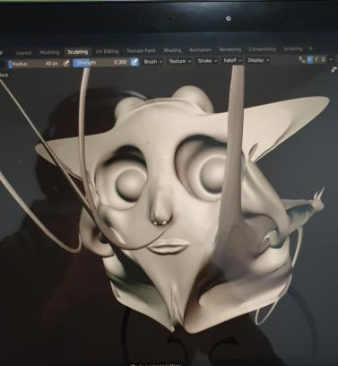
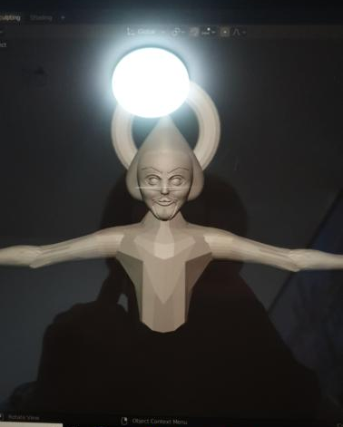
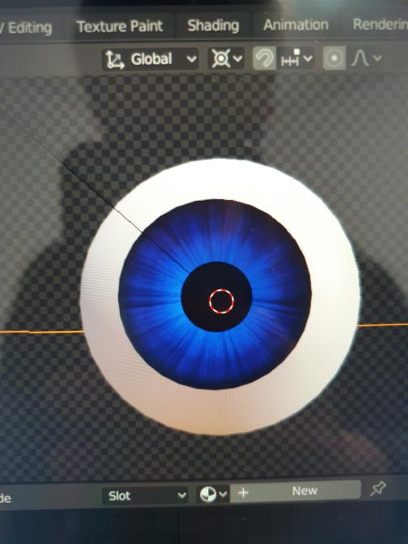
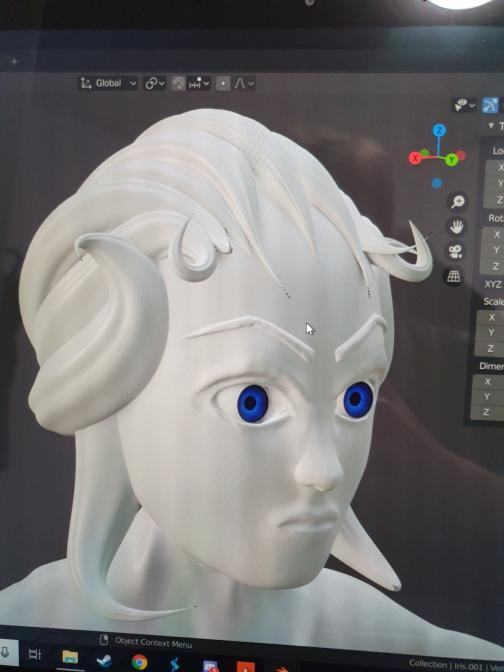
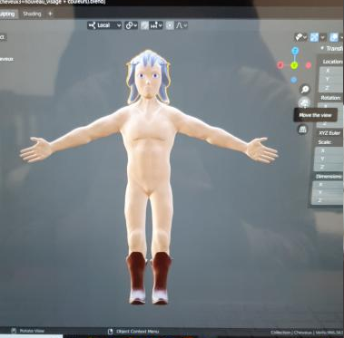
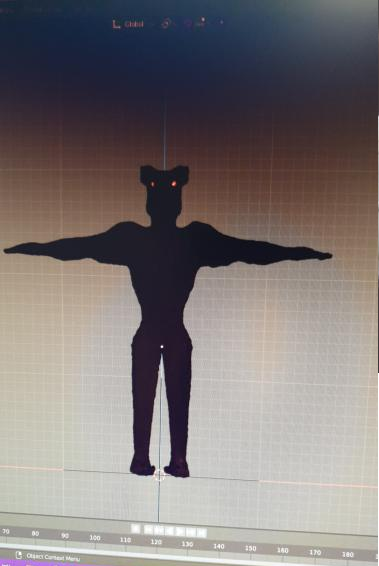

Nathan Frasczak
Character Designer , Map Designer , Animateur
Anthony Cheng
Web master, Développeur
Matthieu Bailly
Chef de projet, Développeur , Sound designer
Timothée Strouk
Développeur , Responsable des IA
18/12/2019 : Formation du groupe.
16/01/2020 : Le cahier des charges est finit.
17/01/2020 : le Cahier des charges est déposé , Nathan commence à s'exercer sur Blender .
19/01/2020 : Nathan a fait un premier prototype de personnage avec une tete un torse et des bras.
31/01/2020 : Le cahier des charges est validé.
04/02/2020 : Nathan commence a faire des yeux et un nouveau prototype.
05/02/2020 : Nouveau prototype de personnage avec des cheveux et un visage plus détaillé.
06/02/2020 : Des couleurs ont été placé sur le personnage.
08/02/2020 : Animation du personnage reussis.
03/03/2020 : le rapport de soutenance est commencé.
08/03/2020 : Le rapport de soutenance est finit.
10/03/2020 : première soutenance.
10/04/2020 : Matthieu a ajouter le projet fmod à unity.
17/04/2020 : Design des ennemies finit.
27/04/2020 : seconde soutenance
13/05/2020 : Ajout d'éléments sur la map (neige etc).
| Problème : | Nathan a eu des problèmes pour animer son personnage. |
|---|---|
| Solution : | Le personnage était une sculpture et non un modèle était trop détailler(2 millions de polygons) ,il a dû modéliser par dessus la sculpture afin de réduire le nombre de polygon. |